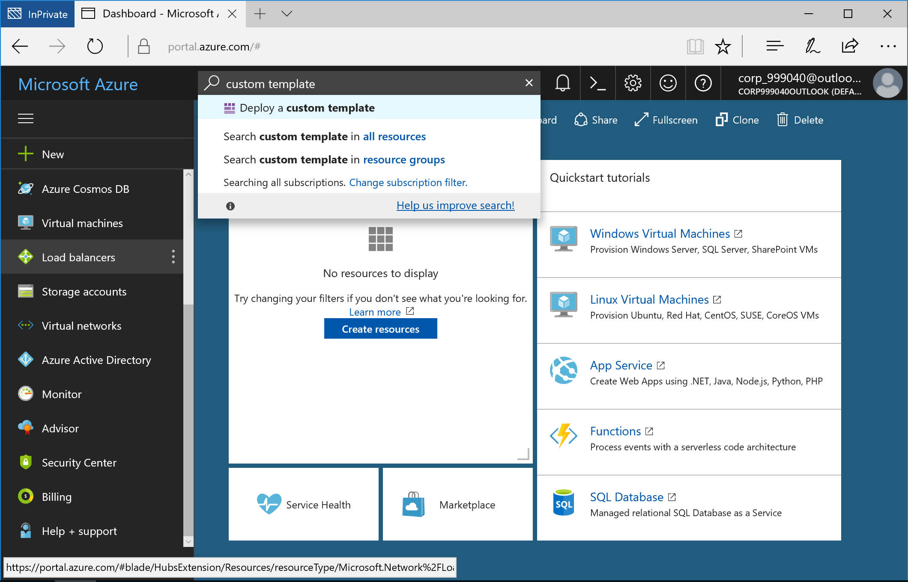

Extending Identities to the Cloud.
Create Windows Active Directory Forest
First we need to create a new Windows Active Directory Forest and Domain to use during this lab and we’ll utilise an ARM template to do all the hard work.
I will be creating a new on premise domain called wildecompany.local but you can create something relevant for you. Use a name slightly different to your public domain as this commonly happens and we will make them match, e.g. onpremiseAD.local.
- In the Azure Portal, search for and open Deploy a custom template

- Type in Active-directory-new-domain > Select Template

- Fill in the parameters requested > Purchase
My settings are below but you can customise it relevant to you:
- Admin Username - domainadmin (in a production deployment it’s recommended to make this difficult to guess)
- Resource Group - WildeCompany
- Location - West Europe
- Domain Name - wildecompany.local (the domain name requires a full stop)
- Dns Prefix - wildecompany
Please note - The template can take up to 30minutes to deploy completely.

- Log into the virtual machine created by the template Resource Groups > WildeCompany > adVM > Connect

- In Server Manager Tools > Active Directory Users and Computers > right click on Users > New > Users > create a few dummy users.
I have created user1, user2, user3

We’ve now created an Active Directory Forest with a single Domain and multiple users.
Move onto the next lab Create Azure Active Directory.